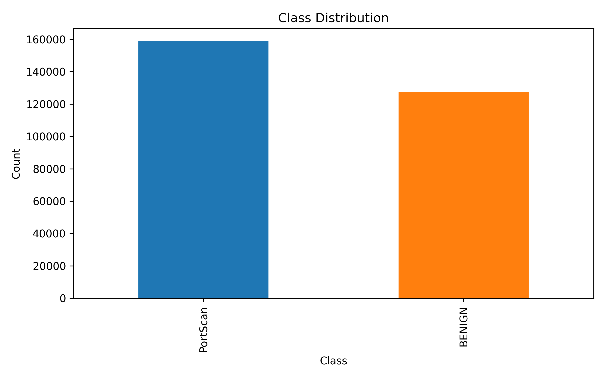
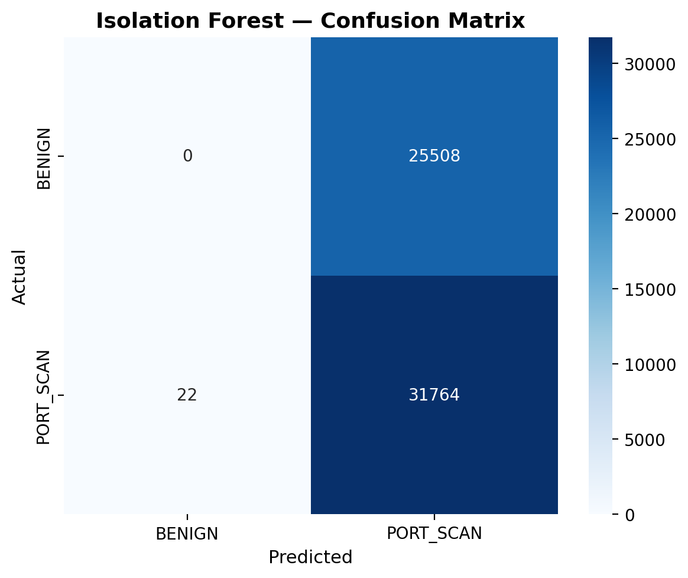

AEGIS Entropy
AI-Based Port Scan Detection & Active Defense
ENSA Kénitra — AI Module S2 2026
Adil LekhbiouiDashboard, Bridge, Integration
KhadijaML Pipeline
El YazidActive Defense
Anas MoulayVM & Lab Setup
Anas ElKartoutiDocumentation & Context
Agenda Shared
- Introduction & Objectives — Anas ElKartouti
- Dataset, Features & Lab — Anas Moulay
- ML Pipeline & Results — Khadija
- Architecture & Dashboard — Adil
- Active Defense — El Yazid
- Live Demo — Adil
- Conclusion — Anas ElKartouti
The Problem Anas ElKartouti
- Port scanning is the first reconnaissance step of nearly every cyberattack
- Traditional signature IDS (Snort, Suricata) miss polymorphic and slow scans
- Anomaly IDS catch novel scans but generate too many false positives
- SOC analysts need explainable, low-FP alerts and automated response
Objectives & Methodology Anas ElKartouti
- Detect port scans with F1 ≥ 88%, Accuracy ≥ 90%, FPR < 6%
- Build a SOC dashboard for live monitoring
- Add active defense: honeypot redirect + port mutation + IP blocking
- Validate in a controlled VirtualBox lab
- Follow CRISP-DM with strict anti-leakage controls
Dataset Anas Moulay
- CICIDS2017 Friday PortScan subset
- PortScan is unusually the majority class here (158,930 vs 127,537 BENIGN)
- This later breaks the Isolation Forest assumption

Features & Lab Setup Anas Moulay
11 Final Features
- Destination Port, Flow Duration
- Total Fwd Packets
- SYN / RST / ACK Flag Count
- Flow IAT Mean
- Bwd Packet Length Mean
- Init_Win_bytes_forward
- 2 placeholders: shadow_node, MTD delta
VirtualBox Lab
- Isolated
192.168.100.0/24
- Kali attacker
.10
- Ubuntu victim
.20
- Victim exposes SSH (22) + HTTP (80)
- 10 Nmap profiles: 4.66 s fast → 505 s slow
Preprocessing Khadija
- Clean malformed headers, replace
inf → NaN, median imputation
- IQR outlier capping (not removal) to keep every attack sample
log1p transform for 5 highly skewed features- StandardScaler fit on train only
- SMOTE on train only → 254,288 balanced samples
Leakage control: scaler and SMOTE never see the test set.
Models Khadija
- Random Forest — primary classifier (100 trees)
- XGBoost — benchmark classifier
- Isolation Forest — unsupervised slow-scan layer
Tree-based models chosen because CICIDS2017 is structured tabular data, results are explainable, and inference is lightweight.
Results Khadija
| Model | Accuracy | F1-Score | AUC-ROC | FPR | Status |
|---|
| Random Forest | 99.91% | 99.92% | 0.9997 | 0.11% | PASS |
| XGBoost | 99.91% | 99.92% | 0.9999 | 0.11% | PASS |
| Isolation Forest | 24.63% | 9.46% | — | 53.53% | FAIL |
Targets: F1 ≥ 88%, Accuracy ≥ 90%, FPR < 6%
The Majority Anomaly Paradox Khadija
- Isolation Forest assumes anomalies are < 5%
- CICIDS2017 PortScan is 55.48% — the majority
- Result: IF learns normal traffic as anomaly
Remediation: Retrain Isolation Forest only on BENIGN traffic for production use.

System Architecture Adil
Capture (Nmap XML / Scapy)
↓
Bridge (preprocess + scale + predict)
↓
ML Detection (RF / XGBoost / IF)
↓
Active Defense (MTD + Honeypot + Block)
↓
SOC Dashboard (Flask + Socket.IO + D3.js)
Dashboard Adil
- Stack: Flask + Socket.IO + D3.js
- Real-time threat level, attack counters, blocked IPs
- Detection log with BENIGN/ATTACK verdicts
- Works offline thanks to local Socket.IO client
Every prediction is logged, not just alerts, so the dashboard shows live traffic flow.
Active Defense Engine El Yazid
- Severity mapping from ML confidence to action:
| Confidence | Severity | Action |
|---|
| < 0.85 | LOW | Honeypot redirect |
| 0.85 – 0.95 | MEDIUM | Redirect + blacklist |
| > 0.95 | HIGH | Redirect + blacklist + port mutation |
Defense modules: Core Deception, Network Mutator, Traffic Shaper, IP Manager.
MTD + Honeypot El Yazid
- Moving Target Defense: rotate exposed ports every 30 s via iptables/nftables
- Honeypot: fake listeners log probes and feed
shadow_node_interaction
- IP Manager: blackhole route + UFW deny with TTL-based unblock
85% → 20%
Fingerprinting success
Defense runtime is Linux-only; dashboard and bridge run cross-platform.
Live Demo Adil
- Command:
python run_demo.py --offline
- Dashboard:
http://localhost:5000
- What will happen:
- 16 benign events from Nmap XMLs
- 5 PortScan attacks from demo data
- 5 auto-blocked IPs
Live Demo Adil
Switch to browser
Run python run_demo.py --offline
Open http://localhost:5000
Conclusion & Perspectives Anas ElKartouti
- Achieved: RF/XGBoost > 99.9% F1, working dashboard + defense modules
- Demonstrated: ML detection + MTD + honeypot in a controlled lab
- Reproducible: offline XML batch mode runs on Windows without Linux-only deps
Perspectives
- Retrain Isolation Forest on BENIGN-only traffic
- Full live Scapy integration
- Multi-class scan-type detection (SYN, UDP, ACK, XMAS)
- Docker/containerized deployment